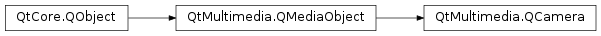

QCamera¶
Synopsis¶
Functions¶
- def
captureMode() - def
error() - def
errorString() - def
isCaptureModeSupported(mode) - def
lockStatus() - def
lockStatus(lock) - def
requestedLocks() - def
setViewfinder(surface) - def
setViewfinder(viewfinder) - def
setViewfinder(viewfinder) - def
setViewfinderSettings(settings) - def
state() - def
status() - def
supportedLocks() - def
supportedViewfinderFrameRateRanges([settings=QCameraViewfinderSettings()]) - def
supportedViewfinderPixelFormats([settings=QCameraViewfinderSettings()]) - def
supportedViewfinderResolutions([settings=QCameraViewfinderSettings()]) - def
supportedViewfinderSettings([settings=QCameraViewfinderSettings()]) - def
viewfinderSettings()
Slots¶
- def
load() - def
searchAndLock() - def
searchAndLock(locks) - def
setCaptureMode(mode) - def
start() - def
stop() - def
unload() - def
unlock() - def
unlock(locks)
Signals¶
- def
captureModeChanged(arg__1) - def
error(arg__1) - def
lockFailed() - def
lockStatusChanged(lock, status, reason) - def
lockStatusChanged(status, reason) - def
locked() - def
stateChanged(state) - def
statusChanged(status)
Static functions¶
- def
availableDevices() - def
deviceDescription(device)
Detailed Description¶
The
PySide2.QtMultimedia.QCameraclass provides interface for system camera devices.
PySide2.QtMultimedia.QCameracan be used withPySide2.QtMultimediaWidgets.QCameraViewfinderfor viewfinder display,PySide2.QtMultimedia.QMediaRecorderfor video recording andPySide2.QtMultimedia.QCameraImageCapturefor image taking.You can use
PySide2.QtMultimedia.QCameraInfoto list available cameras and choose which one to use.QList<QCameraInfo> cameras = QCameraInfo::availableCameras(); foreach (const QCameraInfo &cameraInfo, cameras) { if (cameraInfo.deviceName() == "mycamera") camera = new QCamera(cameraInfo); }See the camera overview for more information.
-
class
PySide2.QtMultimedia.QCamera(position[, parent=nullptr])¶ -
class
PySide2.QtMultimedia.QCamera([parent=nullptr]) -
class
PySide2.QtMultimedia.QCamera(deviceName[, parent=nullptr]) -
class
PySide2.QtMultimedia.QCamera(cameraInfo[, parent=nullptr]) Parameters: - deviceName –
PySide2.QtCore.QByteArray - cameraInfo –
PySide2.QtMultimedia.QCameraInfo - position –
PySide2.QtMultimedia.QCamera.Position - parent –
PySide2.QtCore.QObject
Construct a
PySide2.QtMultimedia.QCamerawhich uses a hardware camera located a the specifiedposition.For example on a mobile phone it can be used to easily choose between front-facing and back-facing cameras.
If no camera is available at the specified
positionor ifpositionisQCamera.UnspecifiedPosition, the default camera is used.Construct a
PySide2.QtMultimedia.QCamerawith aparent.Construct a
PySide2.QtMultimedia.QCamerafromdeviceNameandparent.If no camera with that
deviceNameexists, the camera object will be invalid.Construct a
PySide2.QtMultimedia.QCamerafrom a camera descriptioncameraInfoandparent.- deviceName –
-
PySide2.QtMultimedia.QCamera.Status¶ Constant Description QCamera.ActiveStatus The camera has been started and can produce data. The viewfinder displays video frames in active state. Depending on backend, changing some camera settings like capture mode, codecs or resolution in
ActiveStatemay lead to changing the camera status to and while the settings are applied and back to when the camera is ready.Constant Description QCamera.StartingStatus The camera is starting in result of state transition to QCamera.ActiveState. The camera service is not ready to capture yet.QCamera.StoppingStatus The camera is stopping in result of state transition from QCamera.ActiveStatetoQCamera.LoadedStateorQCamera.UnloadedState.QCamera.StandbyStatus The camera is in the power saving standby mode. The camera may come to the standby mode after some time of inactivity in the QCamera.LoadedStatestate.QCamera.LoadedStatus The camera is loaded and ready to be configured. This status indicates the camera device is opened and it’s possible to query for supported image and video capture settings, like resolution, framerate and codecs. QCamera.LoadingStatus The camera device loading in result of state transition from QCamera.UnloadedStatetoQCamera.LoadedStateorQCamera.ActiveState.QCamera.UnloadingStatus The camera device is unloading in result of state transition from QCamera.LoadedStateorQCamera.ActiveStatetoQCamera.UnloadedState.QCamera.UnloadedStatus The initial camera status, with camera not loaded. The camera capabilities including supported capture settings may be unknown. QCamera.UnavailableStatus The camera or camera backend is not available.
-
PySide2.QtMultimedia.QCamera.State¶ Constant Description QCamera.UnloadedState The initial camera state, with camera not loaded, the camera capabilities except of supported capture modes are unknown. While the supported settings are unknown in this state, it’s allowed to set the camera capture settings like codec, resolution, or frame rate.
Constant Description QCamera.LoadedState The camera is loaded and ready to be configured. In the Idle state it’s allowed to query camera capabilities, set capture resolution, codecs, etc.
The viewfinder is not active in the loaded state.
Constant Description QCamera.ActiveState In the active state as soon as camera is started the viewfinder displays video frames and the camera is ready for capture.
-
PySide2.QtMultimedia.QCamera.CaptureMode¶ Constant Description QCamera.CaptureViewfinder Camera is only configured to display viewfinder. QCamera.CaptureStillImage Camera is configured for still frames capture. QCamera.CaptureVideo Camera is configured for video capture.
-
PySide2.QtMultimedia.QCamera.Error¶ Constant Description QCamera.NoError No errors have occurred. QCamera.CameraError An error has occurred. QCamera.InvalidRequestError System resource doesn’t support requested functionality. QCamera.ServiceMissingError No camera service available. QCamera.NotSupportedFeatureError The feature is not supported.
-
PySide2.QtMultimedia.QCamera.LockStatus¶ Constant Description QCamera.Unlocked The application is not interested in camera settings value. The camera may keep this parameter without changes, this is common with camera focus, or adjust exposure and white balance constantly to keep the viewfinder image nice. QCamera.Searching The application has requested the camera focus, exposure or white balance lock with QCamera.searchAndLock(). This state indicates the camera is focusing or calculating exposure and white balance.QCamera.Locked The camera focus, exposure or white balance is locked. The camera is ready to capture, application may check the exposure parameters. The locked state usually means the requested parameter stays the same, except of the cases when the parameter is requested to be constantly updated. For example in continuous focusing mode, the focus is considered locked as long and the object is in focus, even while the actual focusing distance may be constantly changing.
-
PySide2.QtMultimedia.QCamera.LockChangeReason¶ Constant Description QCamera.UserRequest The lock status changed in result of user request, usually to unlock camera settings. QCamera.LockAcquired The lock status successfuly changed to QCamera.Locked.QCamera.LockFailed The camera failed to acquire the requested lock in result of autofocus failure, exposure out of supported range, etc. QCamera.LockLost The camera is not able to maintain the requested lock any more. Lock status is changed to QCamera.Unlocked.QCamera.LockTemporaryLost The lock is lost, but the camera is working hard to reacquire it. This value may be used in continuous focusing mode, when the camera loses the focus, the focus lock state is changed to Qcamera::Searching with reason.
-
PySide2.QtMultimedia.QCamera.LockType¶ Constant Description QCamera.NoLock QCamera.LockExposure Lock camera exposure. QCamera.LockWhiteBalance Lock the white balance. QCamera.LockFocus Lock camera focus.
-
PySide2.QtMultimedia.QCamera.Position¶ This enum specifies the physical position of the camera on the system hardware.
Constant Description QCamera.UnspecifiedPosition The camera position is unspecified or unknown. QCamera.BackFace The camera is on the back face of the system hardware. For example on a mobile device, it means it is on the opposite side to that of the screen. QCamera.FrontFace The camera is on the front face of the system hardware. For example on a mobile device, it means it is on the same side as that of the screen. Viewfinder frames of front-facing cameras are mirrored horizontally, so the users can see themselves as looking into a mirror. Captured images or videos are not mirrored. See also
-
static
PySide2.QtMultimedia.QCamera.availableDevices()¶ Return type: Returns a list of camera device’s available from the default service provider.
See also
-
PySide2.QtMultimedia.QCamera.captureMode()¶ Return type: PySide2.QtMultimedia.QCamera.CaptureModesSee also
-
PySide2.QtMultimedia.QCamera.captureModeChanged(arg__1)¶ Parameters: arg__1 – PySide2.QtMultimedia.QCamera.CaptureModes
-
static
PySide2.QtMultimedia.QCamera.deviceDescription(device)¶ Parameters: device – PySide2.QtCore.QByteArrayReturn type: unicode Returns the description of the
device.
-
PySide2.QtMultimedia.QCamera.error(arg__1)¶ Parameters: arg__1 – PySide2.QtMultimedia.QCamera.Error
-
PySide2.QtMultimedia.QCamera.error() Return type: PySide2.QtMultimedia.QCamera.ErrorReturns the error state of the object.
-
PySide2.QtMultimedia.QCamera.errorString()¶ Return type: unicode Returns a string describing a camera’s error state.
-
PySide2.QtMultimedia.QCamera.isCaptureModeSupported(mode)¶ Parameters: mode – PySide2.QtMultimedia.QCamera.CaptureModesReturn type: PySide2.QtCore.boolReturns true if the capture
modeis suported.
-
PySide2.QtMultimedia.QCamera.load()¶ Open the camera device. The camera state is changed to
QCamera.LoadedStatus.It’s not necessary to explcitly load the camera, unless unless the application have to read the supported camera settings and change the default depending on the camera capabilities.
In all the other cases it’s possible to start the camera directly from unloaded state.
-
PySide2.QtMultimedia.QCamera.lockFailed()¶
-
PySide2.QtMultimedia.QCamera.lockStatus(lock)¶ Parameters: lock – PySide2.QtMultimedia.QCamera.LockTypeReturn type: PySide2.QtMultimedia.QCamera.LockStatusReturns the lock status for a given
lockType.
-
PySide2.QtMultimedia.QCamera.lockStatus() Return type: PySide2.QtMultimedia.QCamera.LockStatusReturns the status of requested camera settings locks.
-
PySide2.QtMultimedia.QCamera.lockStatusChanged(lock, status, reason)¶ Parameters:
-
PySide2.QtMultimedia.QCamera.lockStatusChanged(status, reason) Parameters:
-
PySide2.QtMultimedia.QCamera.locked()¶
-
PySide2.QtMultimedia.QCamera.requestedLocks()¶ Return type: PySide2.QtMultimedia.QCamera.LockTypesReturns the requested lock types.
-
PySide2.QtMultimedia.QCamera.searchAndLock(locks)¶ Parameters: locks – PySide2.QtMultimedia.QCamera.LockTypesLocks the camera settings with the requested
locks, including focusing in the single autofocus mode, exposure and white balance if the exposure and white balance modes are not manual.The camera settings are usually locked before taking one or multiple still images, in responce to the shutter button being half pressed.
The
QCamera.locked()signal is emitted when camera settings are successfully locked, otherwiseQCamera.lockFailed()is emitted.PySide2.QtMultimedia.QCameraalso emitslockStatusChanged()(QCamera.LockType,QCamera.LockStatus) on individual lock status changes andlockStatusChanged()(QCamera.LockStatus) signal on composite status changes.Locking serves two roles: it initializes calculation of automatic parameter (focusing, calculating the correct exposure and white balance) and allows to keep some or all of those parameters during number of shots.
If the camera doesn’t support keeping one of parameters between shots, the related lock state changes to
QCamera.Unlocked.It’s also acceptable to relock already locked settings, depending on the lock parameter this initiates new focusing, exposure or white balance calculation.
-
PySide2.QtMultimedia.QCamera.searchAndLock() Lock all the supported camera settings.
-
PySide2.QtMultimedia.QCamera.setCaptureMode(mode)¶ Parameters: mode – PySide2.QtMultimedia.QCamera.CaptureModesSee also
-
PySide2.QtMultimedia.QCamera.setViewfinder(viewfinder)¶ Parameters: viewfinder – QGraphicsVideoItemSets the
QGraphicsVideoItembased cameraviewfinder. The previously set viewfinder is detached.
-
PySide2.QtMultimedia.QCamera.setViewfinder(viewfinder) Parameters: viewfinder – QVideoWidgetSets the
QVideoWidgetbased cameraviewfinder. The previously set viewfinder is detached.
-
PySide2.QtMultimedia.QCamera.setViewfinder(surface) Parameters: surface – PySide2.QtMultimedia.QAbstractVideoSurfaceSets a video
surfaceas the viewfinder of a camera.If a viewfinder has already been set on the camera the new surface will replace it.
-
PySide2.QtMultimedia.QCamera.setViewfinderSettings(settings)¶ Parameters: settings – PySide2.QtMultimedia.QCameraViewfinderSettingsSets the viewfinder
settings.If some parameters are not specified, or null settings are passed, the camera will choose default values.
If the camera is used to capture videos or images, the viewfinder settings might be ignored if they conflict with the capture settings. You can check the actual viewfinder settings once the camera is in the
QCamera::ActiveStatusstatus.Changing the viewfinder settings while the camera is in the
QCamera.ActiveStatestate may cause the camera to be restarted.
-
PySide2.QtMultimedia.QCamera.start()¶ Starts the camera.
State is changed to
QCamera.ActiveStateif camera is started successfully, otherwiseerror()signal is emitted.While the camera state is changed to
QCamera.ActiveState, starting the camera service can be asynchronous with the actual status reported withQCamera.statusproperty.
-
PySide2.QtMultimedia.QCamera.state()¶ Return type: PySide2.QtMultimedia.QCamera.State
-
PySide2.QtMultimedia.QCamera.stateChanged(state)¶ Parameters: state – PySide2.QtMultimedia.QCamera.State
-
PySide2.QtMultimedia.QCamera.status()¶ Return type: PySide2.QtMultimedia.QCamera.Status
-
PySide2.QtMultimedia.QCamera.statusChanged(status)¶ Parameters: status – PySide2.QtMultimedia.QCamera.Status
-
PySide2.QtMultimedia.QCamera.stop()¶ Stops the camera. The camera state is changed from
QCamera.ActiveStatetoQCamera.LoadedState.
-
PySide2.QtMultimedia.QCamera.supportedLocks()¶ Return type: PySide2.QtMultimedia.QCamera.LockTypesReturns the lock types, camera supports.
-
PySide2.QtMultimedia.QCamera.supportedViewfinderFrameRateRanges([settings=QCameraViewfinderSettings()])¶ Parameters: settings – PySide2.QtMultimedia.QCameraViewfinderSettingsReturn type: Returns a list of supported viewfinder frame rate ranges.
This is a convenience function which retrieves unique frame rate ranges from the supported settings.
If non null viewfinder
settingsare passed, the returned list is reduced to frame rate ranges supported with partialsettingsapplied.The camera must be loaded before calling this function, otherwise the returned list is empty.
-
PySide2.QtMultimedia.QCamera.supportedViewfinderPixelFormats([settings=QCameraViewfinderSettings()])¶ Parameters: settings – PySide2.QtMultimedia.QCameraViewfinderSettingsReturn type: Returns a list of supported viewfinder pixel formats.
This is a convenience function which retrieves unique pixel formats from the supported settings.
If non null viewfinder
settingsare passed, the returned list is reduced to pixel formats supported with partialsettingsapplied.The camera must be loaded before calling this function, otherwise the returned list is empty.
-
PySide2.QtMultimedia.QCamera.supportedViewfinderResolutions([settings=QCameraViewfinderSettings()])¶ Parameters: settings – PySide2.QtMultimedia.QCameraViewfinderSettingsReturn type: Returns a list of supported viewfinder resolutions.
This is a convenience function which retrieves unique resolutions from the supported settings.
If non null viewfinder
settingsare passed, the returned list is reduced to resolutions supported with partialsettingsapplied.The camera must be loaded before calling this function, otherwise the returned list is empty.
-
PySide2.QtMultimedia.QCamera.supportedViewfinderSettings([settings=QCameraViewfinderSettings()])¶ Parameters: settings – PySide2.QtMultimedia.QCameraViewfinderSettingsReturn type: Returns a list of supported viewfinder settings.
The list is ordered by preference; preferred settings come first.
The optional
settingsargument can be used to conveniently filter the results. Ifsettingsis non null, the returned list is reduced to settings matching the given partialsettings.The camera must be loaded before calling this function, otherwise the returned list is empty.
-
PySide2.QtMultimedia.QCamera.unload()¶ Close the camera device and deallocate the related resources. The camera state is changed to
QCamera.UnloadedStatus.
-
PySide2.QtMultimedia.QCamera.unlock(locks)¶ Parameters: locks – PySide2.QtMultimedia.QCamera.LockTypesUnlocks the camera settings specified with
locksor cancel the current locking if one is active.
-
PySide2.QtMultimedia.QCamera.unlock() Unlock all the requested camera locks.
-
PySide2.QtMultimedia.QCamera.viewfinderSettings()¶ Return type: PySide2.QtMultimedia.QCameraViewfinderSettingsReturns the viewfinder settings being used by the camera.
Settings may change when the camera is started, for example if the viewfinder settings are undefined or if unsupported values are set.
If viewfinder settings are not supported by the camera, it always returns a null
PySide2.QtMultimedia.QCameraViewfinderSettingsobject.See also
© 2018 The Qt Company Ltd. Documentation contributions included herein are the copyrights of their respective owners. The documentation provided herein is licensed under the terms of the GNU Free Documentation License version 1.3 as published by the Free Software Foundation. Qt and respective logos are trademarks of The Qt Company Ltd. in Finland and/or other countries worldwide. All other trademarks are property of their respective owners.